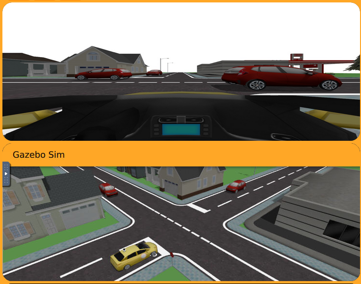

Pruebas del ejercicio Car Junction
Durante esta semana se realizaron pruebas del ejercicio Car Junction con el objetivo de validar su correcto funcionamiento dentro del entorno de simulación.

Ejecución de la solución de control
Además de las pruebas del entorno, se ejecutó la solución de control basada en visión artificial desarrollada para este ejercicio, con el objetivo de comprobar el comportamiento autónomo del vehículo en un escenario completo.
El sistema se basa en una máquina de estados que combina detección de señales, seguimiento de carril y gestión de intersecciones mediante procesamiento de imagen en tiempo real.
Componentes principales del sistema
- Detección de señales de stop mediante segmentación en HSV.
- Detección de línea de parada mediante máscara de color blanco.
- Seguimiento de carril usando el centroide de la carretera.
- Detección de movimiento en el cruce mediante diferencia de frames.
Máquina de estados
El comportamiento del vehículo se organiza en distintos estados que permiten gestionar la conducción de forma autónoma:
- Estado 0: seguimiento de carril a velocidad normal.
- Estado 1: aproximación a señal de stop.
- Estado 2: parada y espera en la línea.
- Estado 3: ejecución del giro en la intersección.
- Estado 4: reanudación del seguimiento de carril.
Fragmento de implementación
if state == 0:
v = 4.0
w_cmd = float(error) * kp
elif state == 2:
v = 0.0
elif state == 3:
v = 2.0
w_cmd = 1.0
Resultados obtenidos
Las pruebas realizadas demostraron que el sistema es capaz de ejecutar correctamente el comportamiento autónomo esperado:
- Detección correcta de señales de stop.
- Parada en la línea correspondiente.
- Gestión de la prioridad en el cruce.
- Ejecución de giros controlados.
- Retorno al seguimiento de carril de forma autónoma.
Conclusión
La solución implementada cumple el objetivo del ejercicio Car Junction, demostrando un comportamiento autónomo completo basado en visión artificial y control por estados.